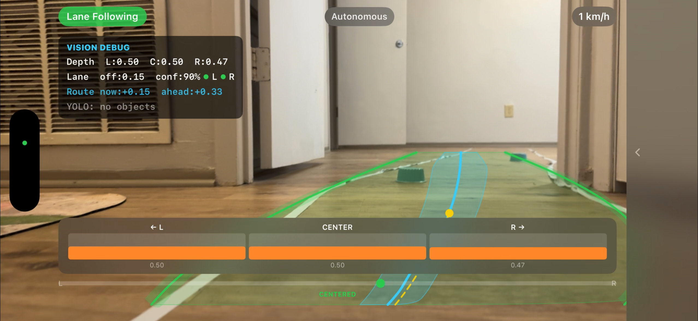
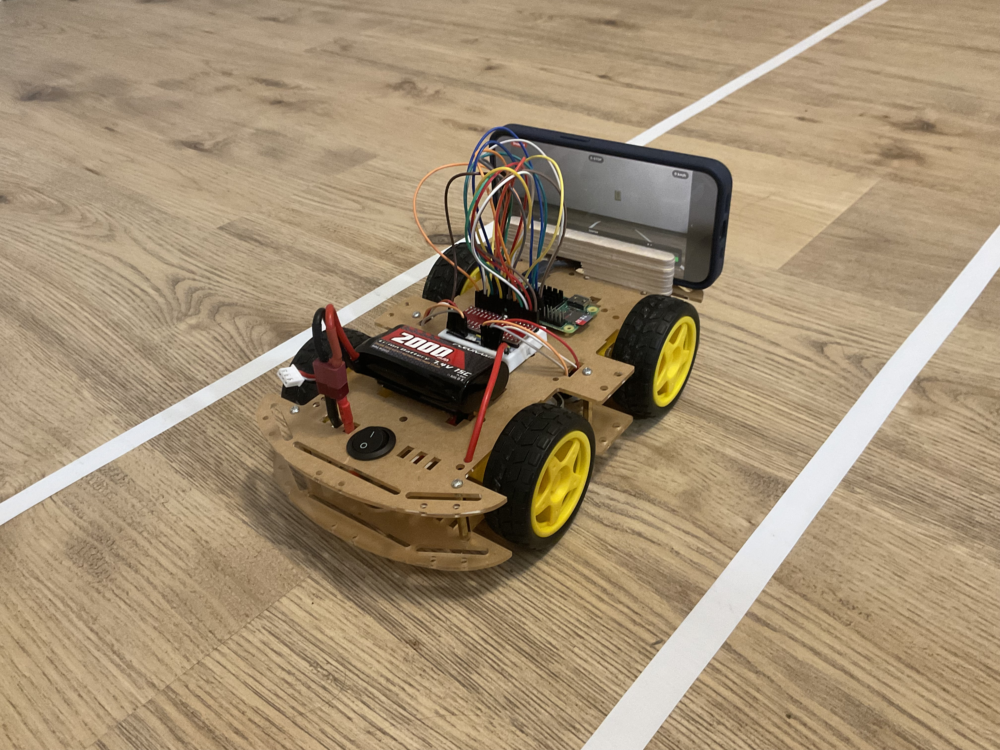

iOS · Embedded · Machine Learning
Autonomous Robot Car
iPhone-powered autonomous navigation for a 4-wheel Raspberry Pi robot — on-device YOLO lane detection, DepthAnything depth estimation, and a 5-state navigation state machine, all wirelessly controlled via BLE.


First-Person Vision Debug Overlay — Lane Segmentation · Depth Estimation · Object Detection Boxes · 15 FPS on-device inference


Overview
The Autonomous Robot Car transforms an iPhone into a real-time autonomous navigation controller for a 4-wheel Raspberry Pi robot. All perception runs on-device using CoreML at 15 FPS — no cloud, no server, no external compute.
Lane following uses YOLOv8 segmentation to identify the walkable area and compute center offset, with a multi-factor boundary repulsion system that applies corrective steering before the vehicle drifts to the edge. Obstacle avoidance layers DepthAnything V2 depth maps over a YOLO object detector, gating avoidance triggers with depth confirmation to suppress false positives from distant large objects.
Drive commands (action, speed 0–100 PWM, steering −100 to +100) are serialized as JSON and transmitted over Bluetooth Low Energy to a Python controller on the Raspberry Pi, which drives the wheels through an L298N motor driver.
Key Features
YOLO Lane Following with Boundary Repulsion
YOLOv8 segmentation identifies the walkable lane area and computes center offset. A proximity-scaled boundary repulsion force pushes the vehicle back when it drifts within 18% of lane edges, providing smooth, continuous correction rather than binary steering.
Depth-Gated Obstacle Avoidance
DepthAnything V2 Small (F16) estimates per-pixel depth across left, center, and right sectors. Object detections are only promoted to avoidance triggers when depth confirmation gates confirm proximity, eliminating false triggers from large distant objects.
5-State Navigation State Machine
The system cycles through five states: Cruising (normal lane following), Slowing (obstacle in proximity), Avoiding (evasive maneuver with boundary clearance validation), Recovering (lane realignment with steer decay), and Blocked (no safe path). Extended lane-loss tolerance of 8 frames prevents premature recovery failures.
Manual Override & Vision Debug Overlay
An on-screen joystick provides full manual control with GPS-derived real-time speed display. A comprehensive debug overlay visualizes lane boundaries, depth measurements, and object detection boxes — with an auto-collapsing sidebar to maximize camera visibility during autonomous operation.
BLE JSON Command Protocol
Drive commands are serialized as JSON over Core Bluetooth and received by a Python script on the Raspberry Pi, which translates them into L298N PWM signals. The protocol carries action type (forward/backward/stop), speed (0–100), and steering angle (−100 to +100) per frame.
Navigation States